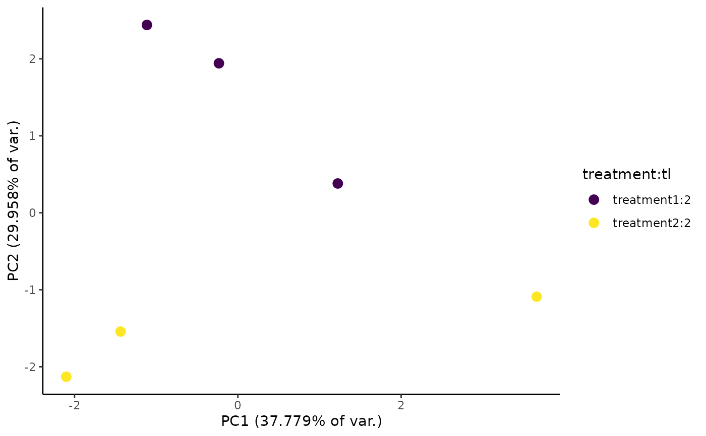

Make an MAPlot from EZbakR comparison
EZpcaPlot.RdMake a plot of effect size (y-axis) vs. log10(read coverage) (x-axis), coloring points by position relative to user-defined decision cutoffs.
Usage
EZpcaPlot(
obj,
data_type = c("fraction_labeled", "reads"),
features = NULL,
exactMatch = TRUE,
variance_decile = 7,
center = TRUE,
scale = TRUE,
point_size = 3,
metadf_cols_to_use = "all"
)Arguments
- obj
An object of class
EZbakRCompare, which is anEZbakRDataobject on which you have runCompareParameters- data_type
Specifies what data to use for the PCA. Options are "fraction_labeled" (default; means using fraction high T-to-C or other mutation type estimate from EZbakR) or "reads" (means using log10(read counts + 1)).
- features
Character vector of feature names for which comparisons were made.
- exactMatch
If TRUE, then
featuresandpopulationshave to exactly match those for a given fractions table for that table to be used. Means that you can't specify a subset of features or populations by default, since this is TRUE by default.- variance_decile
Integer between (inclusive) 1 and 9. Features with sample-to-sample variance greater than the nth decile (n =
variance_decile) will go into PCA.- center
From
prcomp(): a logical value indicating whether the variables should be shifted to be zero centered. Alternately, a vector of length equal the number of columns of x can be supplied. The value is passed to scale.- scale
From
prcomp(): a logical value indicating whether the variables should be scaled to have unit variance before the analysis takes place. Alternatively, a vector of length equal the number of columns of x can be supplied. The value is passed to scale.- point_size
Size of points in PCA plot
- metadf_cols_to_use
Columns in the EZbakR metadf that will be used to color points in the PCA plot. Points will be colored by the interaction between all of these columns (i.e., samples with unique combinations of values of these columns will get unique colors). Default is to use all columns (except "sample"), specified as "all".
Details
EZMAPlot() accepts as input the output of CompareParameters(), i.e.,
an EZbakRData object with at least one "comparisons" table. It will plot
the "avg_coverage" column in this table vs. the "difference" column.
In the simplest case, "difference" represents a log-fold change in a kinetic
parameter (e.g., kdeg) estimate. More complicated linear model fits and
comparisons can yield different parameter estimates.
NOTE: some outputs of CompareParameters() are not meant for visualization
via an MA plot. For example, when fitting certain interaction models,
some of the parameter estimates may represent average log(kinetic paramter)
in one condition. See discussion of one example of this here.
EZbakR estimates kinetic parameters in EstimateKinetics() and EZDynamics()
on a log-scale. By default, since log2-fold changes are a bit easier to interpret
and more common for these kind of visualizations, EZMAPlot() multiplies
the y-axis value by log2(exp(1)), which is the factor required to convert from
a log to a log2 scale. You can turn this off by setting plotlog2 to FALSE.
Examples
# Simulate data to analyze
simdata <- EZSimulate(30)
# Create EZbakR input
ezbdo <- EZbakRData(simdata$cB, simdata$metadf)
# Estimate Fractions
ezbdo <- EstimateFractions(ezbdo)
#> Estimating mutation rates
#> Summarizing data for feature(s) of interest
#> Averaging out the nucleotide counts for improved efficiency
#> Estimating fractions
#> Processing output
# Make MA plot (ggplot object that you can save and add/modify layers)
EZpcaPlot(ezbdo)
